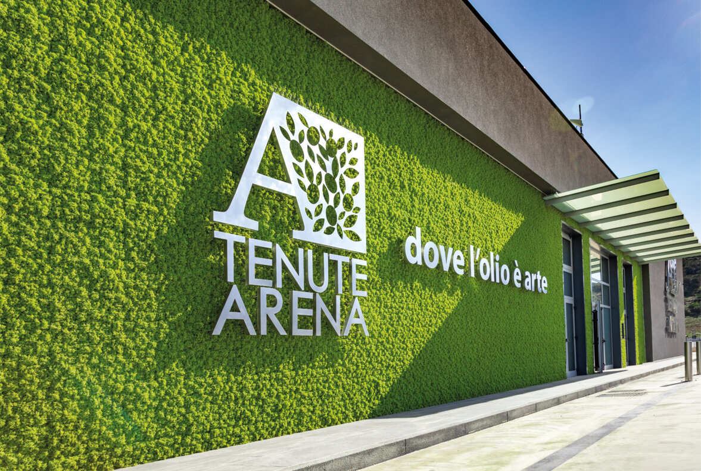

Tenuta Arena è l'espressione della sensibilità e dell'entusiasmo di una nuova generazione che continua la tradizione di famiglia iniziata nel 1966, da sempre distinta per la passione nella coltivazione dell'ulivo e l'amore per i sapori di una volta.
Col passare dei decenni la famiglia Arena crede sempre più negli ulivi, ingrandendo di anno in anno la propria azienda, sino a dotarla dell'attuale consistenza di oltre 5.000 piante. E ogni anno, in autunno, rinnova la magia dell'olio.

Un entroterra autentico in cui territorio, architettura, arte e cibo si intrecciano alla perfezione, rivelando il volto di un'altra Sicilia. Tra questi luoghi spicca senza ombra di dubbio la splendida Villa Romana del Casale, inserita nella World Heritage List dall'Unesco.
Le varietà di ulivi Biancolilla e Nocellara, tipiche del territorio, sono coltivate e raccolte a mano con la presenza di un agronomo che segue tutte le fasi di coltivazione, nel rispetto di un disciplinare rigoroso.
Al termine della giornata di raccolto, in meno di 12 ore le olive sono trasportate al frantoio. Si molisce il prima possibile, per catturare tutta la freschezza del frutto.
Le olive vengono molite a freddo; l'olio è trasportato in appositi serbatoi al deposito dove viene selezionato, controllato e stoccato, con analisi chimiche ed organolettiche periodiche.
Il nostro olio possiede una bassissima percentuale di acidità, adatto anche al consumo dei bambini. Utilizziamo, secondo le norme di legge, un tappo antirabbocco a garanzia dell'autenticità.